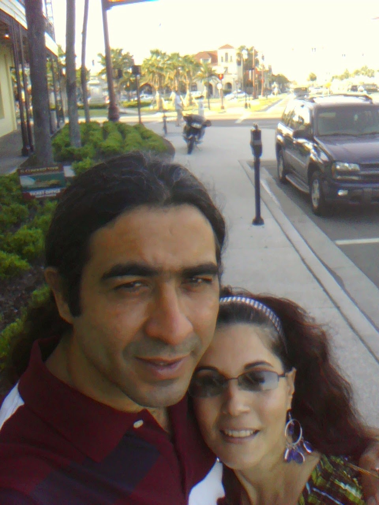
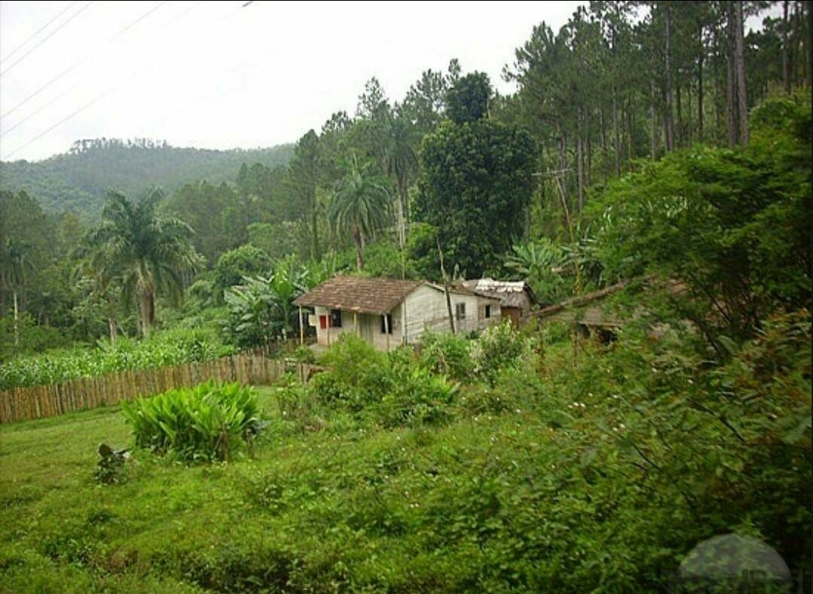
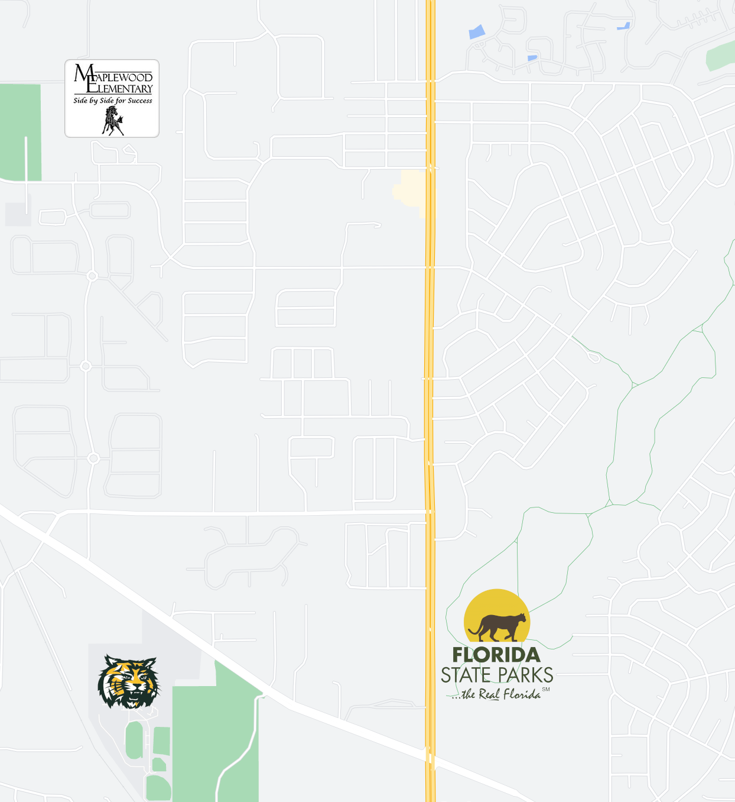

My Biography |
|
|

I was born in Miami, Florida to two Cuban immigrants from Yaguajay, Cuba. While I only lived in Miami for the first two years of my life I still visit it every year to see family during the holidays. My family moved to many places until we ended up in Ocala in 2005. Ocala is my true childhood town where I have all of my memories growing up from the endless horses and beautiful springs. In 2006 I finally visited Cuba to see family that I'd only heard of up to that point. When I arrived the airport was a bit less grandiose than I'd imagined. We drove in a blue car straight out of the 1950s to a house well outside of the usual tourist areas. It was very surprising just how much greenery there was with endless hills full of palm trees like I was teleported into the jungle. The trip was very fun as I gott to experience how my parents live before immigrating here. I saw everything from farms filled with cows to run down chapels and even a horse drawn carriage for the locals.  My childhood growing up in Ocala was pretty ordinary. I went to Maplewood Elementary School and met my best friend Dustin and we remain friends to this day. I went on to Osceola Middle School and then Forest High School where I had a brief interest in going into medicine. It was in 10th grade when I finally got my own computer. A Gateway from Bestbuy. I instantly fell in love with it can started to gradually get more involved in the technical side of computers. I slowly learned about basic video game modding and instantly decided on IT being my major when questioned as I enrolled into UCF. Looking back I enjoyed my childhood even though it was admittedly average. There were no action packed or drama enduced moments worthy of a novel. It was a fun time in Ocala spending time with friends after school and having fun as we all knew the day would come when we graduated and went our separate ways. Below is a map of key locations in my childhood where most of my memories are.  |
||
|
Home |
||